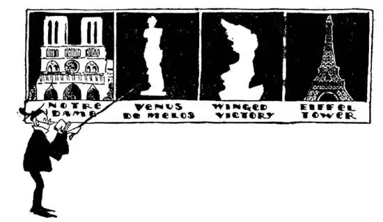

28
Parlez-vous Français?
你讲法语吗？

I KNOW a boy who has never been to school and who has never had a French lesson in his life, but who can speak French fluently. He’s no brighter than you are, either. How do you explain that? It’s because he was born in France. He is a French boy. But there was a time when every one who was anybody, no matter in what country he was born, could speak French. The English kings and nobles and educated people all spoke French; they spoke English only to their servants, who were not supposed to know anything better.
France is only two dozen miles from England—twenty-four miles—but there is water between the two countries and no bridge. The water between England and France is called the English Channel. It might just as well have been called the French Channel, for it doesn’t belong to either England or France. The finest swimmers in the World, both men and women, have come from all over the World just to try to swim across the English Channel. But only a very few have been able to do it. A boat takes only about an hour to cross and an airplane takes even less time.
When you cross over to France you usually leave a place on the English side called Dover and land at a place on the French side called Calais, because this is the shortest distance. It’s short, but often so very rough that every one is seasick—then it seems very long. Some day perhaps a tunnel will be made underneath the English Channel. People usually speak of this as the Calais-Dover route, and there is an old catch question, “What is the shortest route from England to France?” One usually answers “Calais- Dover,” but that is wrong, for the shortest way to France is “Dover-Calais.” Some people cross a longer way, landing at other places on the French side. Havre is one of these places. Havre is at the mouth of a river spelled “Seine,” but called “Sane.”
When you land in France you see French flags flying; they are red, white, and blue, the same colors as our own flag, but their flags have only three stripes and the stripes are up and down, not from side to side, and the colors are backward—blue, white, red, instead of red, white, blue. The street signs and signs on the buildings are in a different language, the people are talking a different language, and of course the money is different too. It is called “francs.”
You have probably heard some one say, “You look like your father or mother,” but they don’t say that your father or mother looks like you. Well, up the River Seine is the capital and largest city of France, spelled “Paris,” but called “Paree” by the French people. Some call it the most beautiful city i. t. w. W.. People often say some other very beautiful city looks “like Paris,” but they never say Paris looks like any other city.

Here are some of the “sights” of Paris
这是巴黎的一些“名胜”
London is up a river too, but it is only a short way and quite large ships can get up to London. But Paris is a long distance up the Seine, and the river is too shallow and too narrow for large steamships to go up so far, although smaller boats can do so. The Seine runs straight through Paris, or rather I should say it runs crooked through Paris, for it curves as it passes through.
On a small island in the river is a great church—a cathedral, built to the Virgin Mary, whom the French call Notre Dame, which means Our Lady. Notre Dame was built many hundreds of years ago of stone and stained glass, with two towers in front and a thin spire in the center “like a finger pointing to heaven.” Long props made of stone hold up the roof. They are called flying buttresses, and if these props were taken away the roof would tumble down. Around on the edge of the roof of Notre Dame are perched strange animals made of stone. They are hideous creatures, different from any real animals you have ever seen or heard of, part bird, part beast, part devil. They are called “gargoyles,” and they were made as hideous as possible and put there on the edge of the roof because it was thought they would scare away evil spirits from the church.
There is another famous church in Paris built to that other Mary in the Bible known as Mary Magdalene. This church to Mary Magdalene is called simply “The Madeleine,” which is the French for Magdalene. It is a much newer church than Notre Dame but it is much older-looking, It is built like the old temples they used to build before Christ was born—before they had any churches. The Madeleine has stone columns all around the outside, but it has no windows, no towers, no flying buttresses, no spire, no dome.
Once upon a time France had kings and queens and princes and princesses, and along the Seine are many beautiful palaces in which they lived. Now, however, France has no more kings and queens or princes. It has a President as we have, for France is a republic as we are. So the old palaces are now used for museums or art galleries or libraries. One of the greatest of these palaces is the Louvre, and in the Louvre are many famous pictures and statues.
A photograph is never worth much—even though it may be a good likeness and the person famous. But a painting, even though not a good likeness and the person unknown, may be worth a fortune. One of the great pictures in the Louvre is the painting of a smiling woman called Mona Lisa. It is one of the most valuable paintings i. t. w. W. , but it was once upon a time stolen right off the wall in the Louvre where it was hanging. It was a foolish thing to steal, for the thief could not sell it nor even show it to any one. All the World looked for the picture, but it was a long time before it was found in another country and put back again in the Louvre, where it is once more.
Before Christ was born people believed there were many gods who were like good and bad fairies, and statues were made of them as they were supposed to look. Two of the greatest statues i. t. w. W. are in the Louvre. One is a marble figure of the goddess Venus. Venus was the goddess of Love, and this statue of her was made more than 2,000 years ago, but was found not many years ago on an island called Melos, so it is called the Venus of Melos. The other figure, like an angel with outspread wings, is called “Victory.” Victory too was made before Christ was born. Venus has lost her arms and Victory has lost her head, but, in spite of that, both figures are more beautiful than most real people who have both arms and head.
The Capitol of France has neither a dome like our Capitol nor towers like the English Capitol. There is, however, a building in Paris with a dome something like that of our Capitol and St. Paul’s in London, but it is neither a church nor a Capitol. It is the tomb of France’s two greatest soldiers. One was named Napoleon, and he lived at the same time as our George Washington. He was at one time emperor before France had presidents. His bones are in a large marble chest under this dome. The other soldier is General Foch—the leader of the armies in World War I.
The tallest tower in the World is in Paris near the banks of the Seine. It is called the Eiffel Tower and it is about a thousand feet high. It is made of iron and stands on four tall iron legs. You can look between its legs and see whole buildings as if the tower were a giant straddling them.
【中文阅读】
我认识一个小男孩，他从没有上过学，也从没有上过一堂法语课，却可以说一口流利的法语。他也并不比你聪明。你说是怎么回事呢？那是因为他出生在法国，是个法国男孩。但曾经有一段时期，凡是有身份的人，不管他出生在 哪个国家，都会说法语。英国的国王、贵族和受过教育的人全都说法语；他们只有跟仆人说话时才说英语，因为仆人只配说英语。
法国距离英国只有24英里，但是中间隔着大海，海上没有桥。英国和法国之间的这片海域叫做英吉利海峡，其实叫做法兰西海峡也无妨，因为这个海峡既不属于英国，也不属于法国。世界上体格最强的游泳好手，男女都有，从世界各地来到这里，都试图游过英吉利海峡。但是成功者寥寥可数。坐船大约一个小时就可以渡过海峡，坐飞机时间就更短了。
从英国去法国，通常是从英国一个叫做多佛尔的地方出发，然后在法国一个叫做加来的地方上岸，因为这条路线最短。行程虽短，却经常波涛汹涌，一路颠簸，人人都晕船——于是行程也就显得漫长了。也许将来有一天英吉利海峡下面会挖通海底隧道。人们通常把这条路线叫做加来—多佛线，这里有一个古老的引人上当的问题：“从英国到法国最短的路线是什么？”人们通常会回答说“加来—多佛线”，但那就错了，因为“去”法国最短的路线应是“多佛—加来”。有人选择长一点的路线，在法国的其他地方上岸。阿弗尔就是其中之一。阿弗尔位于一条河的河口，它叫塞纳河，英语拼写为“Seine”。
到了法国，你就看到法国国旗在各处飘扬；法国国旗有红、白和蓝三种颜色，和美国国旗一样，但是他们的国旗只有三个简单的竖条并列在一起，三个竖条的颜色顺序从左到右是——蓝、白、红，而不是红、白、蓝。街道的标牌和建筑物的招牌上写着法语，不是英语，人们说着法语，也不是英语，当然用的钱也和我们不一样，叫做“法郎”。
你也许听人说过：“你长得像你爸爸（或妈妈）。”但他们不会说你爸爸或妈妈长得像你。塞纳河上游有法国的首都，也是法国最大的城市，拼写是“Paris”，但法国人叫它“巴黎”。有人说巴黎是世界上最美丽的城市。人们常说其他某个美丽的城市看起来“就像巴黎”，但他们从不说巴黎像其他城市。
伦敦也位于一条河的上游，但离海很近，大型船只都可以驶到伦敦。但巴黎在塞纳河上游很远的地方，河水很浅，河道狭窄，大轮船根本驶不到那么远的地方，不过小船倒可以。塞纳河直接流经巴黎，确切地说塞纳河是弯弯曲曲地流经巴黎，因为在这段流程，河道是弯曲的。
在塞纳河的一个小岛上有座大教堂，是为供奉圣母玛丽亚而建的，法国人称她“诺特拉戴姆”，意思是“我们的女士”。巴黎圣母院建于好几百年前，是用石头和彩色玻璃建造的，教堂前面有两个塔，教堂中央有一个细长的塔尖顶，就像“一根指向天空的手指”。长长的石柱支撑起屋顶。这些柱子叫做扶拱垛，如 果柱子被拿走，屋顶就会倒塌。在巴黎圣母院屋顶边缘的四周“栖息”着奇怪的石头动物。它们都是些很丑陋的动物，跟你见过或听说过的任何普通动物都不一样，像鸟，像兽，又像魔鬼。这些东西叫做“怪兽状滴水嘴”，它们的样子被造得尽可能丑陋可怕，放在屋顶的边缘，因为据信它们能把恶鬼从教堂吓跑。
巴黎还有一个著名的教堂是为《圣经》里另外一个玛莉亚而建的，这个玛莉亚叫做“抹大拉的玛莉亚”。这个为抹大拉的玛莉亚而建的教堂被简称为“玛德琳教堂”，法语中用“玛德琳”表示“抹大拉”。这个教堂比巴黎圣母院建得晚，但看起来更古老。建筑风格像基督诞生以前人们建的那种寺庙——那时还没有教堂。玛德琳教堂四周有石柱，但是没有窗户，没有塔，没有扶拱垛，没有尖顶，也没有圆屋顶。
法国从前有国王、王后、王子和公主，塞纳河畔有很多美丽的宫殿供他们居住。然而法国现在再没有国王、王后或王子了。法国和美国一样有总统为国家元首，因为法国和美国一样是个共和国。因此以前那些宫殿现在成了博物馆、美术馆或者图书馆。这些宫殿中最大的一个是卢浮宫，里面收藏了很多著名的绘画和雕像。
一张照片从不会值很多钱——即使拍得很逼真，拍的人也是名人。但是，一幅画，即使画得不太像，画的人也不出名，却可能价值连城。卢浮宫著名绘画中有一幅是一个微笑的女人的肖像画，叫做蒙娜丽莎。它是世界上最值钱的绘画之一，但是这幅画曾经被人直接从卢浮宫的墙上取下，偷走了。偷这幅画真是愚蠢，因为窃贼不敢卖这幅画，甚至不敢展示给别人看。全世界都在寻找这幅画，但过了很长时间以后人们才在另外一个国家找到了这幅画，让它重新回到卢浮宫，卢浮宫再一次收藏了这幅画。
在基督诞生之前，人们相信世界上有很多神，这些神有的像善良的仙子，有的像邪恶的精灵，人们按照自己的想象，雕刻了很多神像。世界上两座最著名的雕像就存放在卢浮宫。一座是女神维纳斯的大理石雕像。维纳斯是爱神，她的这座雕像完成于两千多年前，但是不久前才在一个叫做米洛斯岛的地方被人发现，于是就叫做“米洛斯的维纳斯”。另一座雕像似一个张开翅膀的天使，叫做“胜利女神”。胜利女神像也完成于基督诞生前。维纳斯雕像失去了双臂，胜利女神雕像失去了头，但尽管如此，这两个雕像还是比大多数并不残缺的真人要美。
法国的国会大厦既没有像美国国会大厦那样的圆顶，也没有英国国会大厦那样的塔楼。然而巴黎有一个建筑物有圆顶，有点像美国国会大厦和伦敦圣保罗大教堂那样的圆顶，但它既不是教堂也不是国会大厦。它是法国两个最伟大士 兵的陵墓。一位名叫拿破仑，他和美国的乔治 · 华盛顿生活在同一时期。在法国有总统之前他曾有一个时期是法国的皇帝。他的遗骸放在圆顶下一个很大的大理石箱子里。另一位士兵是福煦将军——他是第一次世界大战中军队的首领。
世界上最高的塔位于巴黎塞纳河畔，叫埃菲尔铁塔，大约有1000英尺高。整个塔都是铁造的，立在四只长长的铁腿上。你可以从它的腿之间望过去，看到整座建筑，就好像铁塔是个跨立在它们之上的巨人。